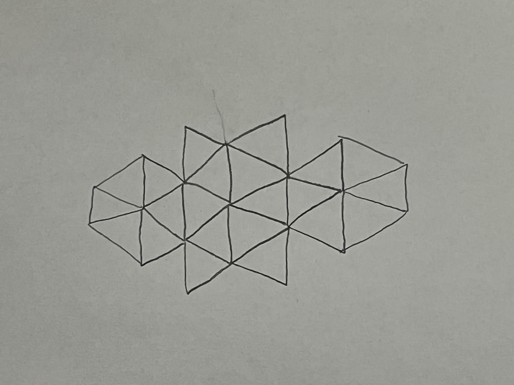

Please use a browser that supports "canvas"
Dots/Metrics Tracker
Drawing Mode:
Point
Triangle
Circle
Shape Color:
Red
Green
Blue
Pick a Color:
Shape Size:
(Circles) Segment Count:
Clear Canvas
My Drawing/Picture:

Draw My Triangle Art